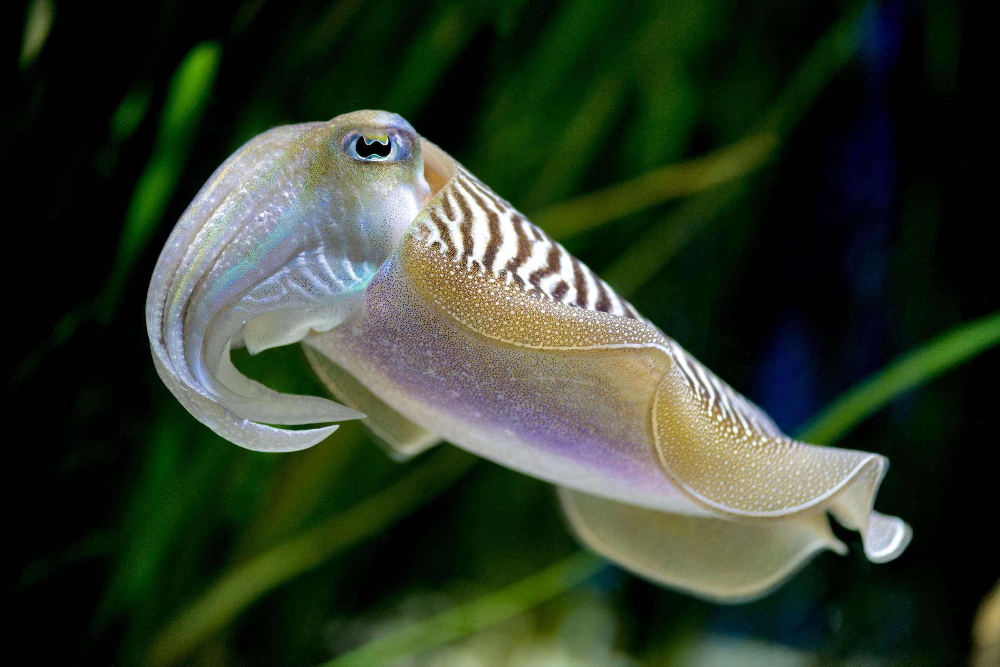

รายละเอียดหมึกกระดองยักษ์

หมึกกระดองยักษ์เป็นสัตว์น้ำที่มีความสามารถเปลี่ยนสีผิวเพื่อพรางตัวและสื่อสาร
ลักษณะเด่น
- ลำตัวมีสีสันหลากหลาย เปลี่ยนแปลงได้ตามอารมณ์
- มีหนวด 8 เส้น และแขนจับเหยื่อ 2 เส้น
- ขนาดเฉลี่ย 20-25 นิ้ว
ถิ่นที่อยู่อาศัย
พบในทะเลเขตร้อนและเขตอบอุ่นทั่วโลก